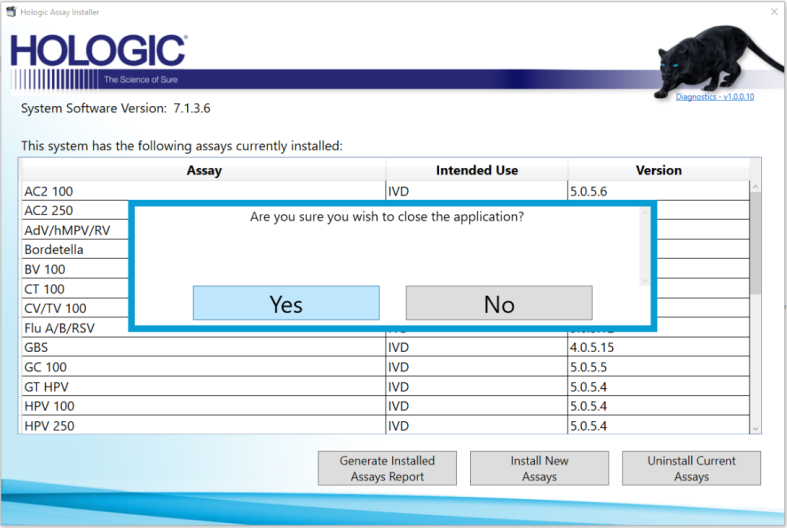

Installing Assay Software on System v7 and above
The following instructions are applicable for installing Assay Procedures required to prepare and perform a specific test. In the context of this document, assay refers exclusively to a Hologic test, such as Aptima Combo or Ultrio. SW on System SW v7 and above.
Procedures required to prepare and perform a specific test. In the context of this document, assay refers exclusively to a Hologic test, such as Aptima Combo or Ultrio. SW on System SW v7 and above.
Always refer to the SW Install TB for information on what Assay Software must be installed

|
Note— Screen shots below are reference ONLY |
- Reference the appropriate Software Install TB and determine what SW name, number and version is to be installed.
- On the FSE Laptop, download the appropriate Assay installer and transfer to an approved USB drive.
- Insert the USB drive into the PC and from the FSE Shield Click on Install Software
- From the Software Installer GUI, click on Browse
- Navigate to the location of the Assay Installer, click Open, then click Install Package
- A Software License Agreement Screen will appear. Click Agree

- If installing System v7 Assays for the first time, the following screen will appear.

If installing addition Assays, the above screen would be populated with Assays already installed on the PC.
Click Install New Assays - The next few screens offer Assay Selection
- First, filter by System (Panther, Fusion or select both Panther and Fusion)

- Second, filter by Assay Type (IVD, CE-IVD, IUO, PEO, RUO, LDT)

- For example selecting CE-IVD, selects ALL Assays labeled as CE-IVD

- Alternatively, Assays can also be selected individually.
- Select Assays to be Installed as per Customer Requirements and click Next
Confirm what Assay are to be installed with your FAS, FSM and AE
- First, filter by System (Panther, Fusion or select both Panther and Fusion)
- Confirm the Assays to be installed and click Install

- As the Installation proceeds, a progress bar will appear, the installed assays will be labeled with a green check mark and have their status updated to Installed

- Once complete a .pdf Installation report will be available to view and save. Click on the pdf hyperlink

- A report will open in Acrobat. Save a copy of the report to a thumb drive, (to be uploaded to the SR) and close Acrobat.

- Click Home

- The screen will now display ALL the assays currently installed on the System. Click the x at the Top Right to exit

- Click Yes to close the application

- Assay installation ins now complete.
 button at the top of the page to send feedback, comments, or change requests.
button at the top of the page to send feedback, comments, or change requests.